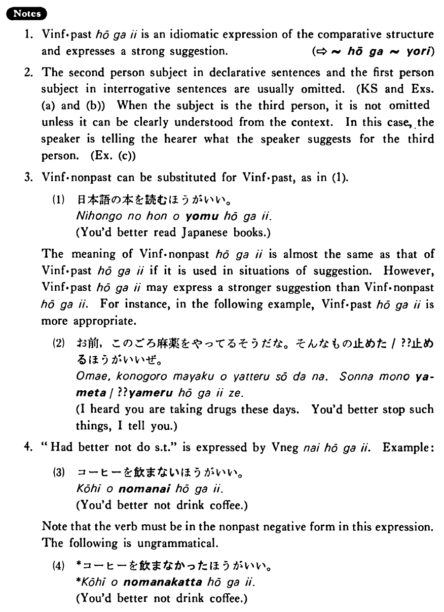

←
DoJG
→
ほうがいい
(B. 138)
Example sentences
(ks).
日本語の本を読んだ
ほうがいい・いい
です。
You'd better read Japanese books.
(a).
野菜も食べた
ほうがいい
よ。
You'd better eat vegetables, too.
(b).
もう帰った
ほうがいいです
か。
Had I better go home now?
(c).
和子はもっと英語を勉強した
ほうがいい
ね。
Kazuko had better study English harder.
Formation
Vinformal past
ほうがいい
話した
ほうがいい
Had better talk
食べた
ほうがいい
Had better eat
